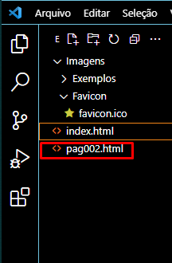

Pesquisar sobre SEO
Serve para organizar o código HTML para que mecanismos de busca possam encontrar o seu site
Para este fim, utilizamos a tag "a". Nela inserimos o link para o qual será direcioando ao clicar
Exemplo:
Você pode acessar o meu repositório publico no Github

Quando se utiliza a tag "a" o texto pertinente ao link fica sublinhado.
Você também pode acessar o meu canal gratuito no youtube

Obs.Utilizando links dessa forma, o usuário será direcionado a outra página. Ou seja, sairá do seu site.
Para evitar isso e fazer com que o link seja aberto em uma nova aba (mantendo a sua aberta) utiliza-se target="_blank" logo após as aspas do link na tag a junto com o termo "rel" que é relativo a "external".
Existe também o termno target="_self". Que determina pro navegador que o link é dedicado somente a este site

Exemplo
Você também pode acessar o meu canal gratuito no youtube

Links internos fazem ligações com outras páginas/outros serviços/arquivos que estão dentro do nosso servidor (que fazem parte do nosso site)
Deve ser criado um novo arquvio index.html na mesma pasta a qual você está utilizando para criar este site
Esta é a primeira pagina do meu site. Se você quiser pode acessar também a minha segunda página

Clicando no link será feito o direcionamento pra segunda página
Repare que no termo "rel" esta escrito "next". Isso refere-se à proxima pagina deste mesmo site

Com isso, você determina pro navegador que a pagina a ser "visitada" é uma pagina interna do seu site. É basicamente pra não deixar o navegador decidir, por contá própria qual será a pagina. Ele será obrigado a direcionar pra próxima/next
Você também pode acessar nossa página de notícias
Lembre-se de pesquisar o tipo de comando/atributo para inserir no link de download